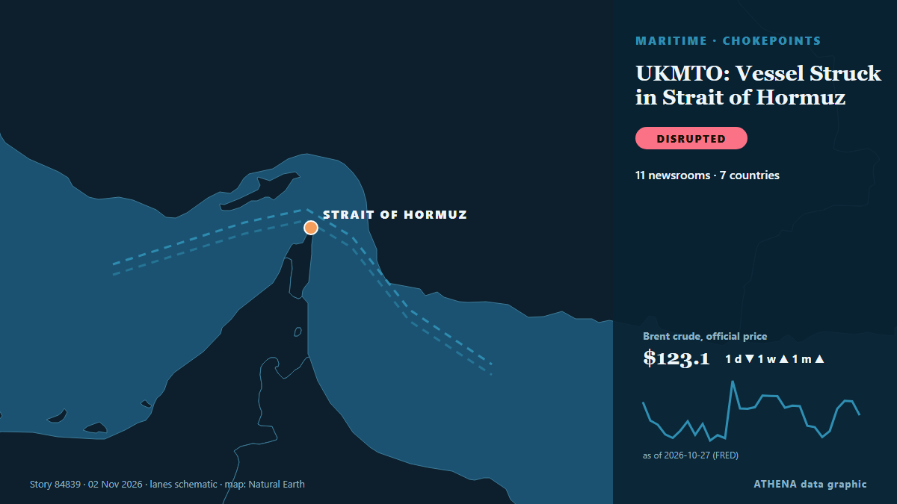

الشحن والموانئ
| 20 أكتوبر | 0 |
|---|---|
| 21 أكتوبر | 0 |
| 22 أكتوبر | 0 |
| 23 أكتوبر | 1 |
| 24 أكتوبر | 0 |
| 25 أكتوبر | 0 |
| 26 أكتوبر | 0 |
| 27 أكتوبر | 0 |
| 28 أكتوبر | 1 |
| 29 أكتوبر | 5 |
| 30 أكتوبر | 9 |
| 31 أكتوبر | 3 |
| 1 نوفمبر | 3 |
| 2 نوفمبر | 1 |
تُعرض العناوين بالإنجليزية كما نُشرت.

Vessel Struck in Strait of Hormuz
Data and insights tracking transit activity, oil prices, petroleum reserves, supply chain impacts and geopolitical developments affecting the waterway. من IndustryWeek
Tanger Med 3 terminal due to start operations in mid-2031
Tanger Med, Morocco (Ports Europe) November 2, 2026 – The Tanger Med 3 container terminal is due to start operations in mid-2031, Tanger Med chief executive Mehdi Tazi-Riffi said. من Ports Europe
Iran's IRGC Navy says two oil tankers exploded after hitting mines in Hormuz
Coalition says it destroyed two ballistic missile launchers The Coalition has released footage it says shows the targeting and destruction of two ballistic missile launch platforms. من Gulf News
Tanker struck by projectile in Strait of Hormuz
KUWAIT CITY, Oct 23: A tanker reported being struck by an unknown projectile while sailing outbound through the Strait of Hormuz, about seven nautical miles northeast of Limah, Oma... من Arab Times
Panama Canal expands shipping capacity
The Panama Canal recorded increased shipping traffic, cargo volumes and revenue in 2026, despite concerns over water shortages linked to El Niño. من The Portugal News
Taiwan says China harassing shipping with east coast patrol
TAIPEI, Nov 1 (Reuters) – China’s Coast Guard is harassing shipping with its latest patrol off Taiwan’s east coast and trying to exert a fictional jurisdiction, the Taiwanese Coast Guard said, adding… من gCaptain
Iran submits evidence of US-Israeli attacks on ports, maritime infrastructure to IMO
London, IRNA — Iran has submitted documents and photographic evidence of US and Israeli attacks on the country’s ports, civilian vessels, and maritime infrastructure to the International Maritime… من IRNA (English)
Natalia Margioli Breaks a 115-Year Barrier at Shipbrokers’ Institute
Natalia Margioli has become the first woman and first Greek to serve as president of the Institute of Chartered Shipbrokers in 115 years. من Greek City Times
South Korean Group Wins Its First US Navy Medium Landing Ship Contract After Buying A Philadelphia Shipyard In 2024
TOTE Services, LLC, a leading U.S. maritime services company specializing in vessel construction management and ship management announced its first shipyard selection for the Medium Landing Ship… من Marine Insight
Iran Guards Say Halted 3 Tankers After 'Incidents' In Strait Of Hormuz
The Iran Guards did not specify the nature of the incidents, which came a day after Iran's armed forces said at least four tankers had stopped in the area after hitting mines. من NDTV
SA suspends operations at border with Botswana, Beitbridge braces for more traffic
Thupeyo Muleya Beitbridge Bureau SOUTH Africa has temporarily suspended operations at Kopfontein Port of Entry, which connects it with Botswana, following… من The Herald
Iran Says Four Tankers Hit Mines in Hormuz as US Insists Shipping Lanes Are Clear
Iran says four oil tankers caught fire after striking mines in the Strait of Hormuz, a claim that directly challenges US assurances that the main shipping lanes through the waterway have been cleared. من Greek City Times
Tanker carrying 27 Indians struck by limpet mines in Strait of Hormuz; minister says all seafarers safe
The incident took place on Thursday, 25 nautical miles (46 km) northeast of Oman's Khasab, British navy agency United Kingdom Maritime Trade Operations said. من Hindustan Times
Oman rescues 25 from burning ship, Iran halts tankers
Oman’s navy evacuated the crew members from the Panamanian-flagged merchant ship RITI after it was attacked and caught fire. من Free Malaysia Today
Aggressors bear responsibility for disruption in Persian Gulf, Strait of Hormuz: Iran envoy
New York, IRNA – Iran’s Ambassador and Chargé d’Affaires to the United Nations in New York Gholamhossein Darzi has said aggressors bear direct responsibility for any disruption, obstruction or… من IRNA (English)
Feds tap Delta, B.C., port expansion as 'project of national interest'
The federal government has listed Roberts Bank Terminal 2 in Delta, B.C., as a "project of national interest" to expand and diversify Canada's trade capacity. من CBC News (alternative feed)
South Korean Navy Training Ship Makes First-Ever Port Call At U.S. Naval Air Station In Florida
South Korean Navy training ship ROKS Hansando makes its first-ever port call at Pensacola, bringing nearly 400 personnel for a four-month international training deployment. من Marine Insight
Greece and Turkey Clash at UN Over Libya Maritime Agreement
Greece and Turkey engaged in a sharp diplomatic confrontation at the United Nations Security Council on Thursday, over the controversial 2019 Turkey-Libya maritime agreement, exchanging accusations… من Greek Reporter
Turkey-Libya maritime delimitation MoU ‘null and void’ says Cyprus
The Republic of Cyprus has reiterated its position that the 2019 Turkey-Libya MoU on maritime delimitation is “null and void”. من Cyprus Mail